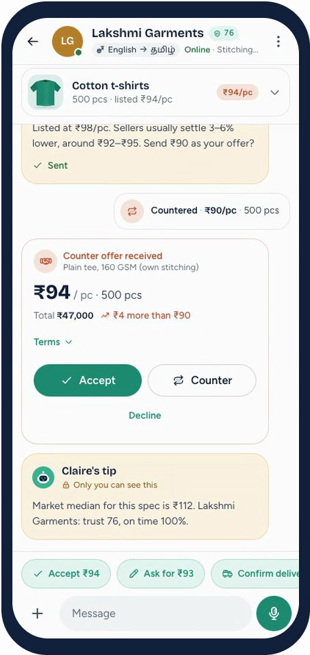
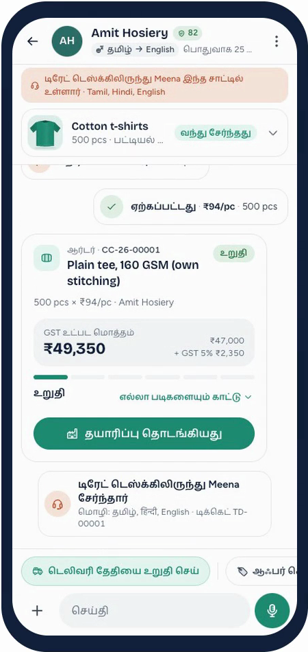
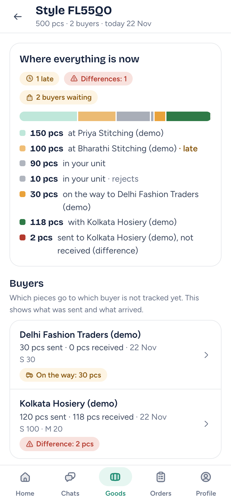

A multilingual, chat-first trade app for India's knitwear supply chain, built on the Nexconn Chat SDK. Team Coders · Track: Marketplace & Support · Nexconn Build Challenge 2026
Nexconn App Keym7ua80gbmcvhm
Live appclaire-connect.onrender.com
Sourcegithub.com/nandini-kuppala/claire-connect
Try itSign-in screen → "Explore as a demo business"
The problem
Tiruppur in Tamil Nadu makes about 90 % of India's cotton knitwear exports, across roughly 20,000 small units (TEA via Upstox, 2026). Most units do one or two steps (knitting, dyeing, cutting, stitching, packing) and outsource the rest, so one order can pass through about eight businesses. Between them, the trade runs on phone calls, WhatsApp groups and paper delivery challans.
Language: buyers in the north and east speak Hindi or Bengali, while most makers speak Tamil. Negotiations go through middlemen or get lost in translation.
No shared record: when 500 kg of fabric goes to a dyer and 488 kg comes back, it is one person's word against another's. Nobody can see where an order really is.
No one to call: when a delivery is short or a payment is late, there is no neutral person who speaks both languages.
What CLAIRE Connect does
CLAIRE Connect puts the whole trade into one chat app, in the user's own language. It has two halves that share the same chat infrastructure.
1. Marketplace and support (the track)
Claire, an AI trade assistant. A buyer types or speaks a request ("500 cotton T-shirts under ₹120") in any of 10 Indian languages. Claire finds and ranks suppliers on price, trust, stock and delivery, and can split a big order across units.
Deal rooms. Buyer and seller negotiate in a translated group chat. Offers, counter-offers and orders (with GST, advance and balance) are structured cards. Claire sends each side private price tips.
Trade Desk. A human agent dispatch centre. Tickets come from a chat button, from sentiment in a deal, or from late payments and short deliveries. They are routed to an agent who speaks the right language, who joins the same chat.
Trust. Two-way ratings, on-time payment and delivery, GST verification, and a storefront for every seller.
2. Goods: tracking the production chain (beta)
Every hand-off recorded in seconds. "Send for work", "Got back", sales, returns. The record arrives as a card in a shared chat between the two businesses.
Two-sided confirmation. The receiver confirms what actually arrived. A difference is shown to both sides and settled, never overwritten. A double-entry ledger keeps every piece accounted for.
Flow view. Where every piece of a style or order is right now: at which unit, in the owner's shop, on the way, or with a buyer, with late work flagged.
A private Claire. Each business can ask questions about its own records in Tamil, Hindi or English ("how much fabric is still at the dyer?"), and record work by voice. Writes are saved only after a one-tap confirmation.

Deal room (buyer). A counter-offer card, and Claire's tip that only the buyer sees.

The same deal for the seller, in Tamil. The order card has GST, and a Trade Desk agent has joined.

Flow view (Goods): all 500 pieces of a style, by place, with late work and differences.
How it uses Nexconn
Every conversation in the app runs on Nexconn: web Chat SDK @nexconn/chat with @nexconn/engine, the optional Call SDK @nexconn/call, and the Nexconn Server API. Each app user is a Nexconn user, and the bots (Claire, CLAIRE Updates, Trade Desk) are Nexconn users too.
Nexconn feature
Where the app uses it
Direct channels
Each user's one-to-one chat with Claire (search, analytics, record drafts). Server replies are sent through the Server API as the claire user.
Group channels
Every deal room (deal_…), support room, and the Goods conversation between two businesses (goods_…). They are created server-side, and members are added and removed as agents join.
System channel
"CLAIRE Updates": order, payment and dispatch notices.
Custom messages
Four registered types:
CC:Card: offers, counter-offers, orders, movement and dispute cards, notices;
CC:Hint: private tips;
CC:Reply: quick-reply chips;
CC:Voice: voice notes with transcripts.
A card is updated in place, by re-posting it, as a deal or order moves on.
Targeted messages
Claire's price tips, and the owner-only due reminders, are sent to one member of a group, so the other side never sees them.
Translation module
NCEngine.translateModule with a custom translate handler: auto-translation of chat into the reader's language. There are 10 Indian languages, with the UI in English, Tamil and Hindi plus 7 more.
History, unread, read receipts
The channel list shows the latest message and unread count. Message history pages back through a conversation. Read receipts are sent when a chat is opened.
Typing indicators
Shown in deal rooms and support chats.
Call SDK
One-tap voice and video calls from a deal room and from the Trade Desk console. A call summary card ("Voice call · 2:31", "Missed call") is posted into the chat.
Webhooks
The message:send webhook (signature verified) lets the server react to messages. It runs Claire's replies, price detection and sentiment-based escalation, and archives group history, so a late-joining agent can read what came before.
The Trade Desk console: queue, ticket with an AI summary and suggested next step, the shared deal chat, and the order context.
Architecture
Code: a monorepo with three parts:
a React 19 web app (Vite, Tailwind);
an Express and TypeScript API on Render, which also serves the web app;
shared domain code.
Data: MongoDB Atlas.
AI: LLMs through OpenRouter, falling back to rules. Speech-to-text and text-to-speech use Sarvam AI.
The Goods ledger: double-entry, with each event, its postings and the holdings written in one transaction. "Ownership" and "where it physically is" are separate, so a business can see goods it owns that sit at another unit. The server checks that every holding equals its postings.
Quality checks: typecheck and lint, unit tests, and 15 end-to-end smoke scripts, including data isolation between businesses. Load test: about 10 requests a second with 0 errors at 20 concurrent workers. Stress test: 30 concurrent Nexconn connections, 308 messages, 0 send failures, median delivery 317 ms.
Low-end phones and patchy networks: an offline outbox, a cached app shell, and every main screen ready in under 2 s on a 4×-throttled phone over slow 4G.
Built during the challenge
All of it. The repository starts on 19 Nov 2026; nothing existed before the challenge. The marketplace, Claire, deal rooms, the Trade Desk and the Nexconn integration were built first. The Goods supply-chain module followed, behind a feature flag. It has been verified against two full real-world scenarios with 15 participating demo businesses.
Who it is for, and growth
Users: small and mid-sized garment businesses in Tiruppur (makers, job-work units, fabric and trims shops) and their buyers across India. Many are Tamil-first, use budget Android phones, and already run their trade on chat.
Early use: 3 businesses are testing the live app. Public, live counters of real (non-demo) activity are at claire-connect.onrender.com/api/stats.
Business model:
a free tier for small units;
a paid tier for multi-unit manufacturers (Goods, reports, staff accounts);
a small fee on orders closed in a deal room, with the Trade Desk included.
Next steps:
onboarding a full Tiruppur chain (yarn → knit → dye → cut → stitch) as a pilot;
WhatsApp share links for partners who are not on the app yet (already built for Goods statements);